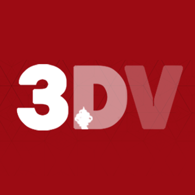
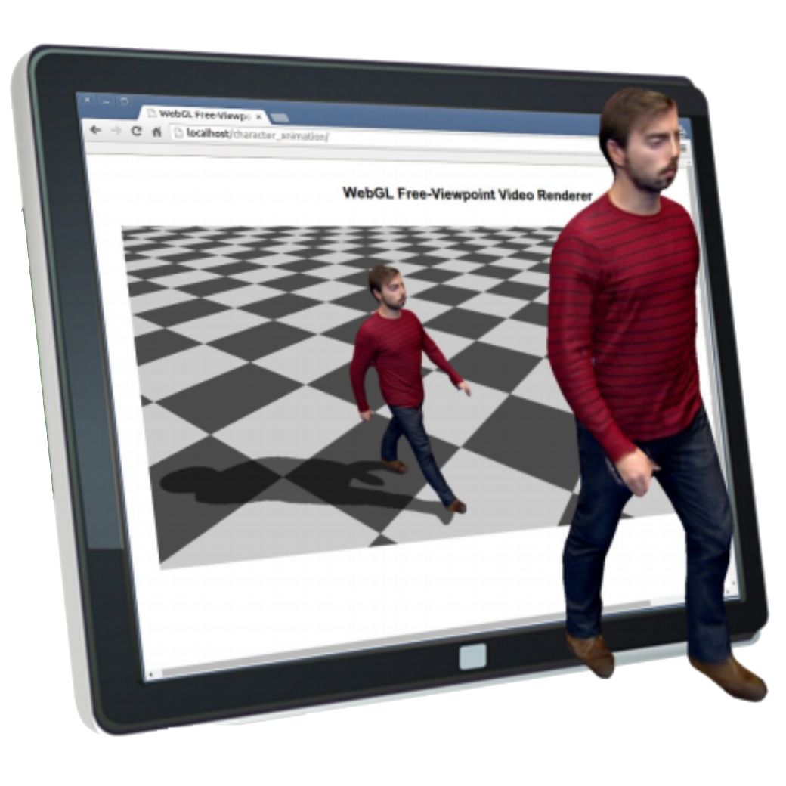
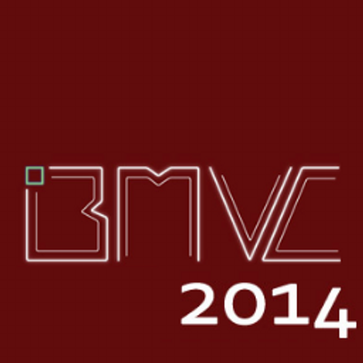
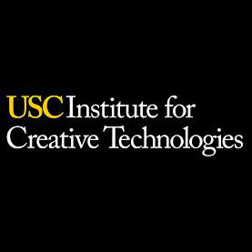
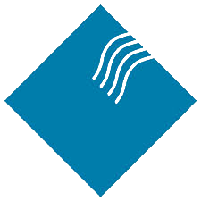

Bio

I am currently a Research Fellow in the Centre for Vision, Speech and Signal Processing (CVSSP) at the University of Surrey. In 2016 I completed a PhD supervised by Prof. Adrian Hilton (Surrey) and Prof. Graham Thomas (BBC R&D). My PhD introduced novel techniques to compactly represent multiple view video to allow efficient free-viewpoint rendering. In January 2013, I undertook a three month internship at BBC R&D in London. I gained hands on experience in the setup and operation of a multiple camera performance capture studio and integrated a novel rendering approach into an existing WebGL based renderer. In June 2015, I spent three months at the Institute of Creative Technologies at the University of Southern California, Los Angeles. During this time, I designed and developed a photogrammetry scanning cage using 100 raspberry pi’s that was used to rapidly generate photo-realistic 3D avatars. In 2011, I obtained a masters degree (MEng) in Electronic Engineering with distinction at the University of Surrey. During the course, I had the opportunity to spend a year working in industry for which I acquired a placement at Sony Broadcast and Professional Research Labs (BPRL), Basingstoke, UK.
Research
Projects
 |
ALIVE: Live Action Light Fields for Immersive VR Experiences Innovate UK project in collabration with Figment Productions and Foundry September 2016 - December 2017 |
|
Raspberry Pi Photogrammetry Cage for Rapid Avatar Creation University of Southern California, Institute for Creative Technologies June 2015 - September 2015 |
|
 |
RE@CT EU FP7 Project in collabration with Artefacto, BBC R&D, Fraunhofer HHI, INRIA Grenoble and OMG Vicon December 2011 - November 2014 |
Publications
2017
 |
4D Temporally Coherent Dynamic Light-field Video A. Mustafa, M. Volino, J. Guillemaut and A. Hilton International Conference on 3D Vision (3DV) |
|
Real-time Full-Body Motion Capture from Video and IMUs C. Malleson, M. Volino, A. Gilbert, M. Trumble, J. Collomosse and A. Hilton International Conference on 3D Vision (3DV) |
2016
|
View-dependent representation of shape and appearance from multiple view video M. Volino PhD Thesis, University of Surrey |
2015
|
RE@CT: A new production pipeline for interactive 3D content F. Schweiger, G. Thomas, A. Sheikh, W. Paier, M. Kettern, P. Eisert, J.S. Franco, M. Volino, P. Huang, J. Collomosse, A. Hilton, V. Jantet, and P. Smyth IEEE International Conference on Multimedia & Expo Workshops (ICMEW) |
|
 |
Online Interactive 4D Character Animation M. Volino, P. Huang, and A. Hilton International Conference on 3D Web Technology (Web3D) |
2014
 |
Optimal Representation of Multiple View Video M. Volino, D. Casas, J. Collomosse, and A. Hilton British Machine Vision Conference (BMVC) |
|
4D Video Textures for Interactive Character Appearance D. Casas, M. Volino, J. Collomosse, and A. Hilton Computer Graphics Forum (Proceedings of Eurographics 2014) |
2013
|
Layered View-Dependent Texture Maps M. Volino and A. Hilton Proceedings of the 10th European Conference on Visual Media Production (CVMP) |
|
|
Free-viewpoint video rendering for mobile devices J. Imber, M. Volino, J-Y, Guillemaut, S. Fenney, and A. Hilton In Proceedings of the 6th International Conference on Computer Vision / Computer Graphics Collaboration Techniques and Applications (MIRAGE) |
CV
Experience
|
Research Fellow University of Surrey, UK January 2016 - Present |
|
 |
Visiting Research Scholar University of Southern California, Institute for Creative Technologies, Los Angeles, USA June 2015 - September 2015 |
|
R&D Intern BBC R&D, London, UK January 2013 - April 2013 |
|
 |
Technical Support Officer Intelligent Systems Research Laboratory, University of Reading, Berkshire, UK July 2010 – September 2010 |
 |
R&D Placement Student Sony Broadcast and Professional Research Laboratories, Basingstoke, UK September 2008 – October 2009 |
Education
|
PhD Computer Vision and Graphics University of Surrey, UK October 2011 - January 2016 |
|
|
MEng Electronic Engineering - Distinction University of Surrey, UK September 2006 - June 2011 |
|
 |
BTec National Diploma Electrical/Electronic Engineering - Triple Distinction Richmond upon Thames College, London, UK September 2004 - June 2006 |
For a detailed CV please contact me.